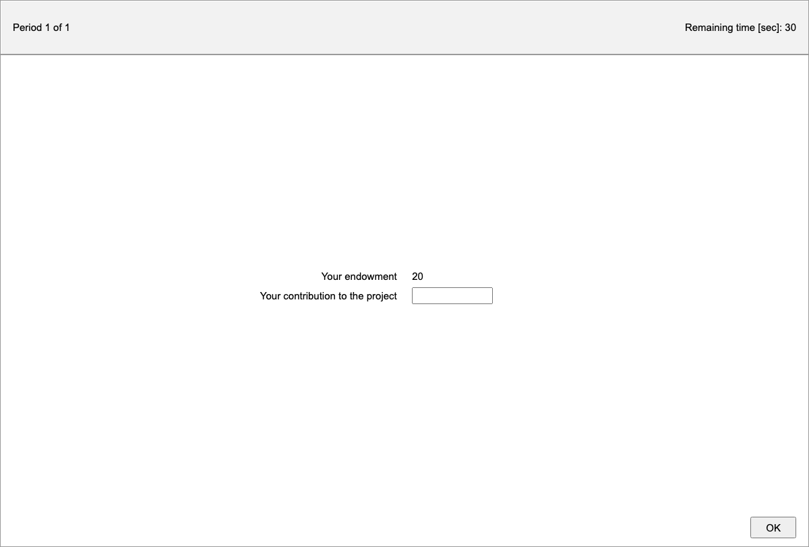
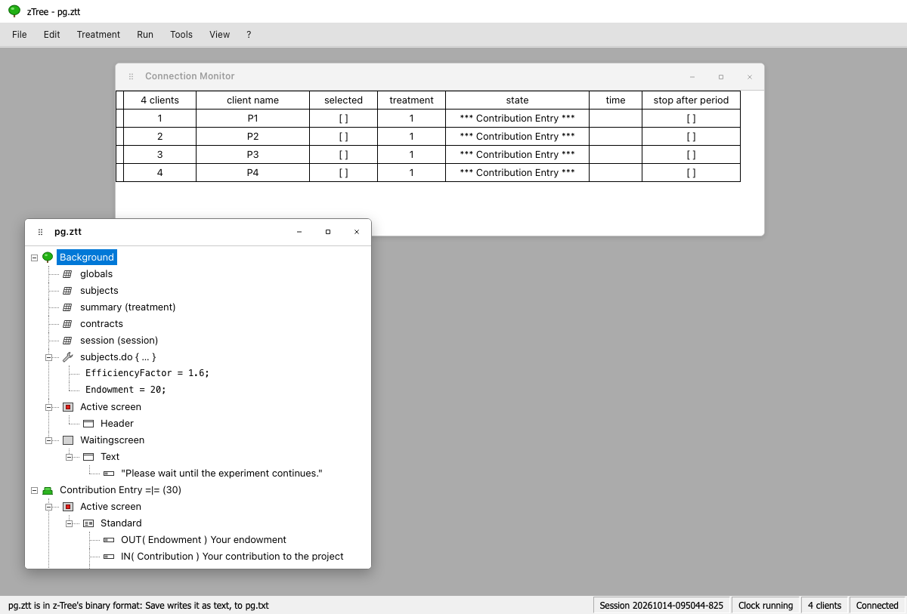

jtree runs z-Tree treatments as they are, with participants in their browsers instead of z-Leaf. It can also edit them as z-Tree does, and convert them to jtree apps.
The samples library has 23 z-Tree treatments, each also written as a jtree app and an oTree app.
Running a treatment
Put the treatment in client/apps, then use File → Reload apps in the admin. jtree reads:
.zttfiles, z-Tree's own, from z-Tree 3 to z-Tree 5;- z-Tree's text export (
.txt, from z-Tree's File → Export); - questionnaires (
.ztq).
A treatment runs like any other app: start a session with it, or add it to one, from either admin. Its programs run in z-Tree's language over z-Tree's tables (globals, subjects, summary, contracts, session, and its own), and each subject's page shows z-Leaf's screens: standard, header, help and container boxes, contract creation and contract list boxes, history, grid, chat, message and plot boxes, with their items, buttons, checkers and layouts. Table loaders and dumpers read and write their files in the session's folder.
To test a treatment alone, "Play with bots" in the Session panel plays it to its end with a generic z-Tree bot: each subject fills in and presses what their screen offers.
Where z-Tree and jtree differ, for example dividing by 0, a session's "Rules" decide: by z-Tree's, the program goes on as z-Tree 5 does (inf, an array's first or last element); by jtree's, it stops with an error, shown in the admin (see Settings). jtree's reading and running of treatments has been checked against z-Tree 5.1.21.

The z-Tree admin
/admin/ztree/ is an admin laid out after z-Tree: z-Tree's menu bar (File, Edit, Treatment, Run, Tools, View, ?) over a desktop of windows. It follows the z-Tree 5.1 manual. The open windows and where they are are in the address (?w=…), so reloading the page keeps them and a link opens them as they were.
- Run → Start Treatment (F5) starts the open treatment for the selected clients, or all. Stop Clock (F12) and Restart Clock (Shift+F12) pause and resume the session's timers.
- Run → Connection Monitor: z-Tree's columns. Tick
selectedto start the next treatment for only some clients; select states, then Run → Leave Stage; tickstop after period. Double-click a client to watch its screen. - Run → Tables:
treatments,clients,sessionglobals,participations,logfile, and each treatment'sglobals,subjects,groups,contractsandsummary, as they change. Copy cells with Ctrl+C, or File → Export Table…. - Tools → Start z-Leaf…: a client in a window, by name, as
zleaf.exe /name firstdoes, for testing on one computer.
What jtree has no counterpart for (the matching menu, GameSafe, the data tools, ...) is greyed out.

Editing a treatment
File → Open… shows a treatment's stage tree as z-Tree draws it: the Background with its tables, programs and screens, then the stages, each with its programs, Active screen and Waitingscreen, and their boxes, items, buttons, checkers and plot items. File → New Treatment starts a new one.
- Treatment → New … adds a stage, table, table loader or dumper, program, box, button, checker, item or plot item where the selection says, as z-Tree does, after its dialog.
- Double-click an element (or Treatment → Info…) to open its dialog, with z-Tree's fields, in z-Tree's words. Settings a dialog has no field for are under Other settings. A program's code and a screen's HTML are edited in a code editor, with colours, line numbers, Tab to indent and search (Ctrl+F); Enter there starts a new line, and the dialog's OK is a click (or Enter outside the code).
- Edit: Undo (Ctrl+Z), Redo (Ctrl+Y), Cut, Copy, Paste, Delete, Move Up and Move Down (Alt+↑, Alt+↓).
- Treatment → Check parses every program and expression, and lists any that do not.
- File → Save writes the treatment in z-Tree's text format, which z-Tree opens with File → Import…. jtree reads
.zttfiles but does not write them: one opened here is saved as a.txtbeside it. File → Export Treatment… downloads the text.
Treatment → Parameter Table shows the periods, subjects, groups and their programs.
Converting to a jtree app
Treatment → Convert to jtree… writes a jtree app from a treatment, as a folder beside it:
app.jtt: the periods, parameter table and stages, with the programs translated from z-Tree's language to Javascript, and the screens as jtree screens;ztree.cjs: what the translated code uses;CONVERSION.md: what was converted, and anything left to do by hand.
The converted app plays as the treatment does, and can then be changed like any jtree app. From the command line: node server/source/dialects/ztree/convert.js <treatment.ztt> [<output folder>].
z-Tree's terms in jtree
| z-Tree | jtree |
|---|---|
| Treatment | App |
| Client, z-Leaf | Participant, their page |
| Subject | Player |
| Stage `= | =` (wait for all) |
| Stage timeout | stage.duration |
subjects.do { … } |
playerStart, playerEnd |
groups.do { … } |
groupStart, groupEnd |
Background globals.do { … } |
Code at the top of the app, such as app.pieSize = 100; |
| Active screen | The stage's activeScreen: a <form> is a standard box, <input name="player.x"> an input item, {{player.x}} an output item |